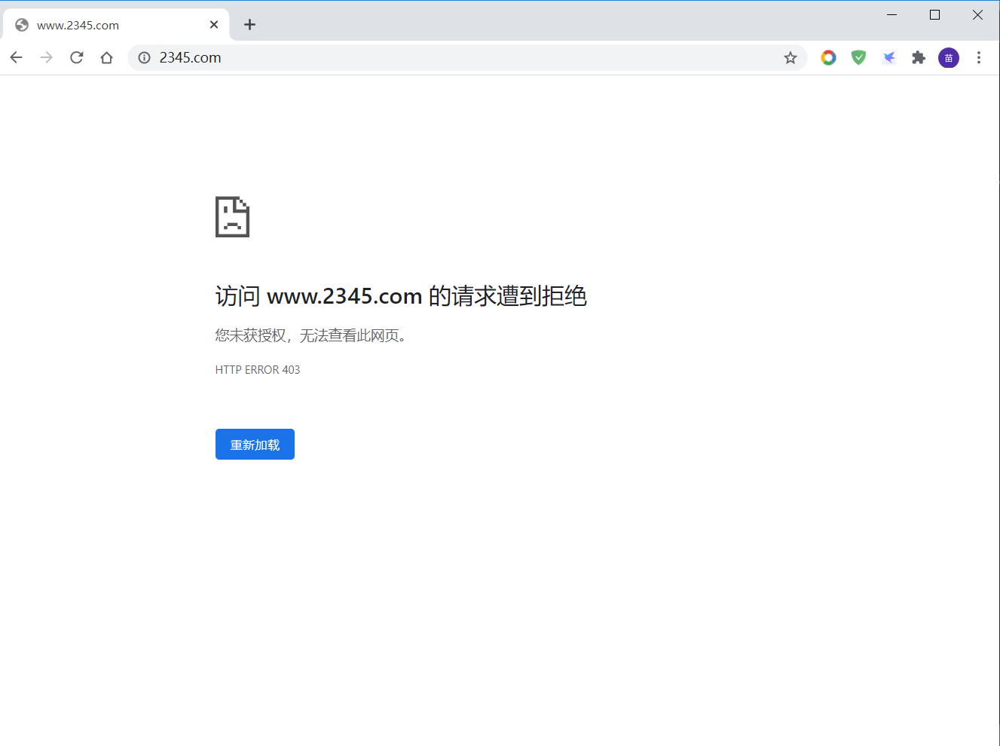
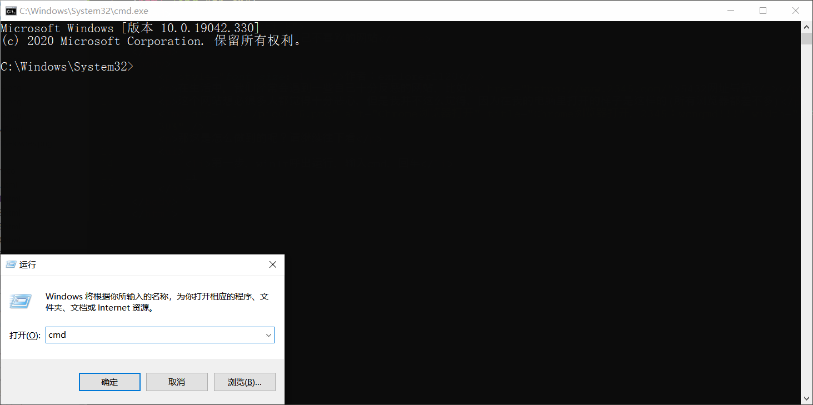
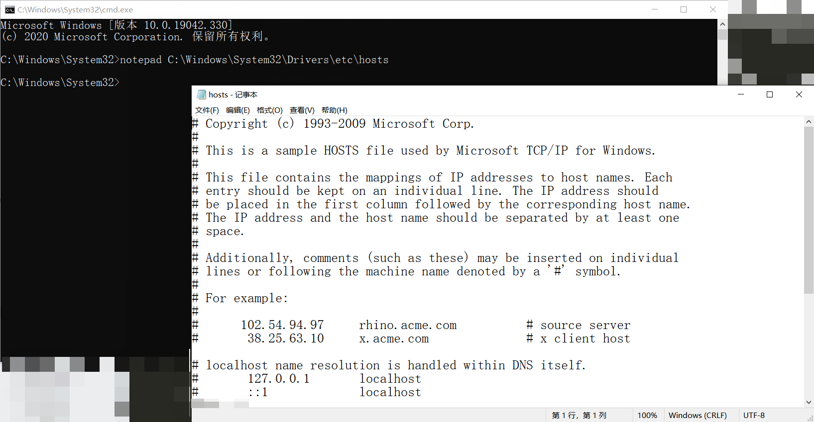
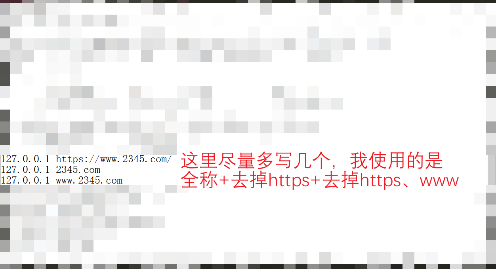

端午特别篇-屏蔽自己不喜欢的网站
作者：explorer1120
在生活中，我们经常会遇到一些自己十分反感的网站，比如5432网址导航
这个网站想必很多人都觉得十分恶心，但是我并不这么觉得，因为在我的电脑里打开的样子是这样的(所有浏览器都差不多)

那这是怎么做到的呢？请继续往下看
- 第一步，win+r呼出运行，输入cmd，回车

- 第二步，输入"notepad C:\Windows\System32\Drivers\etc\hosts"，回车

- 第三步，在里面输入"127.0.0.1 网址"，如"127.0.0.1 https://www.2345.com"

- Ctrl+S，重启电脑，完成！
这就完了吗？
的确完了233333333